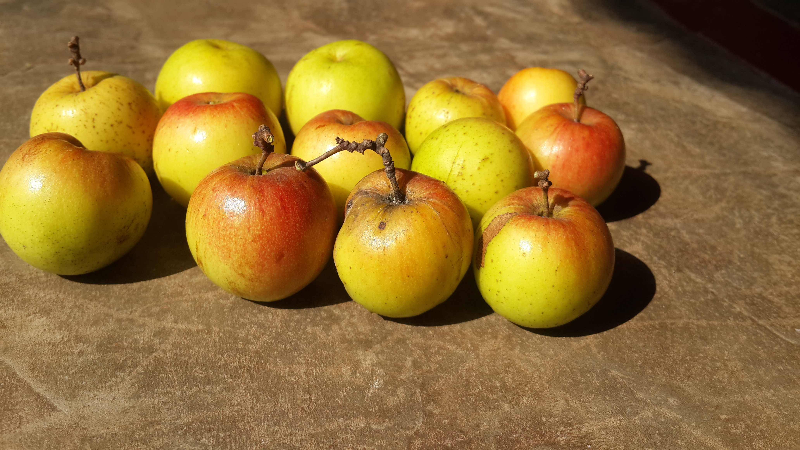
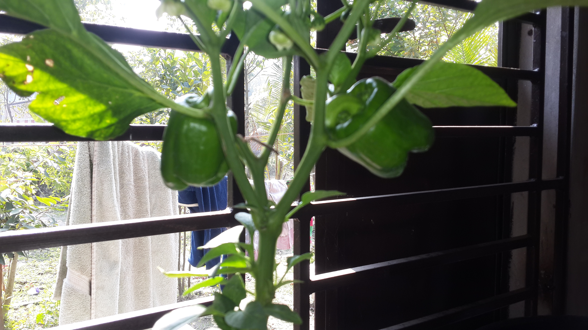

The sweet and fleshy product of a tree or other plant that contains seed and can be eaten as food is called fruit.
There are different types of fruit in the world. Every country has there own special fruit . As like the popular fruits in Bangladesh are different from the neighour country India or Pakistan.
On the other hand some think fruit and vegitables are same . BUT they aren't . The main Difference Between them are A peach is a fruit, whoever you are, and a carrot is definitely a vegetable. But in the Venn diagram relating these two produce categories, there's a sizeable region of overlap. It results from the fact that "fruit" and "vegetable" are defined differently depending on whether you're a gardener or a chef.
My linked in idIn Bangladesh one of the most popular seasonal fruit is Jujube, in Bangla people call it as Boroi or Kul. It is also known as Indian jujube. Its scientific name is Ziziphus mauritiana .This fruit belongs to Rhamnaceae family. Boroi/kul or jujube is a tropical fruit.
Last updated 3 mins ago

The garden strawberry (or simply strawberry; Fragaria × ananassa)[1] is a widely grown hybrid species of the genus Fragaria, collectively known as the strawberries. It is cultivated worldwide for its fruit. The fruit is widely appreciated for its characteristic aroma, bright red color, juicy texture, and sweetness. It is consumed in large quantities, either fresh or in such prepared foods as preserves, juice, pies, ice creams, milkshakes, and chocolates. Artificial strawberry flavorings and aromas are also widely used in many products like lip gloss, candy, hand sanitizers, perfume, and many others.
Last updated 3 mins ago
The generic name may come from Latin capsa, meaning 'box', presumably alluding to the pods; or from the Greek word κάπτω kapto, 'to gulp'.[4][5][6] The name "pepper" comes from the similarity of piquance (spiciness or "heat") of the flavor to that of black pepper, Piper nigrum, although there is no botanical relationship with it or with Sichuan pepper. The original term, chilli (now chile in Mexico) came from the Nahuatl word chīlli, denoting a larger Capsicum variety cultivated at least since 3000 BC, as evidenced by remains found in pottery from Puebla and Oaxaca.[7] Different varieties were cultivated in South America, where they are known as ajíes (singular ají), from the Quechua term for Capsicum.
Last updated 3 mins ago
Eating a diet rich in vegetables and fruits as part of an overall healthy diet may reduce risk for heart disease, including heart attack and stroke. Eating a diet rich in some vegetables and fruits as part of an overall healthy diet may protect against certain types of cancers. Diets rich in foods containing fiber, such as some vegetables and fruits, may reduce the risk of heart disease, obesity, and type 2 diabetes. Eating vegetables and fruits rich in potassium as part of an overall healthy diet may lower blood pressure, and may also reduce the risk of developing kidney stones and help to decrease bone loss. Eating foods such as fruits that are lower in calories per cup instead of some other higher-calorie food may be useful in helping to lower calorie intake.
Go somewhere